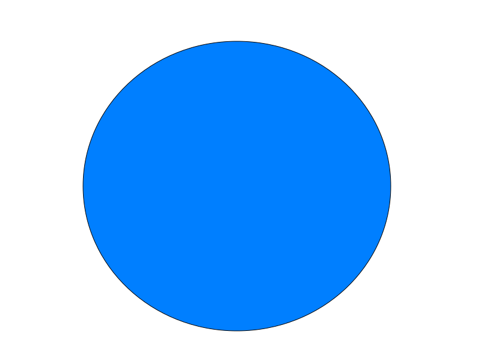

<div class="header">
  Native Components
</div>
<div class="body">
  <ul class="directory-list">
    <li (click)="openORcloseST()" [ngClass]="{'folderopen':(isSimpletypesOpen),'folderclose':(!isSimpletypesOpen)}">
      <ng-container *ngTemplateOutlet="iconImg; context:{ type: 'STH' }"> </ng-container>
      <span> Simple Types </span>
      <ul *ngIf="isSimpletypesOpen">
        <ng-container *ngTemplateOutlet="components; context:{ list: templateService.nativeComponents,type:'ST' }">
        </ng-container>
      </ul>
    </li>
  </ul>
  <ul class="directory-list">
    <li (click)="openORcloseCT()" [ngClass]="{'folderopen':(isComplextypesOpen),'folderclose':(!isComplextypesOpen)}">
      <ng-container *ngTemplateOutlet="iconImg; context:{ type: 'CTH' }"> </ng-container>
      <span> Complex Types </span>
      <ul *ngIf="isComplextypesOpen">
        <ng-container *ngTemplateOutlet="components; context:{ list: templateService.nativeComponents,type:'CT' }">
        </ng-container>
      </ul>
    </li>
  </ul>
</div>

<ng-template #components let-list="list" let-type="type">
  <ng-container *ngFor="let nativeComponent of list">
    <li class="nativetype" *ngIf="nativeComponent.type == type" (click)="templateService.stopPropagation()"> 
      <ng-container *ngTemplateOutlet="iconImg; context:{ type: nativeComponent.type }"> </ng-container>
      <span> {{ nativeComponent.typeName }}</span>
    </li>
  </ng-container>
</ng-template>

<ng-template #iconImg let-type="type">
  
  
  
  
</ng-template>